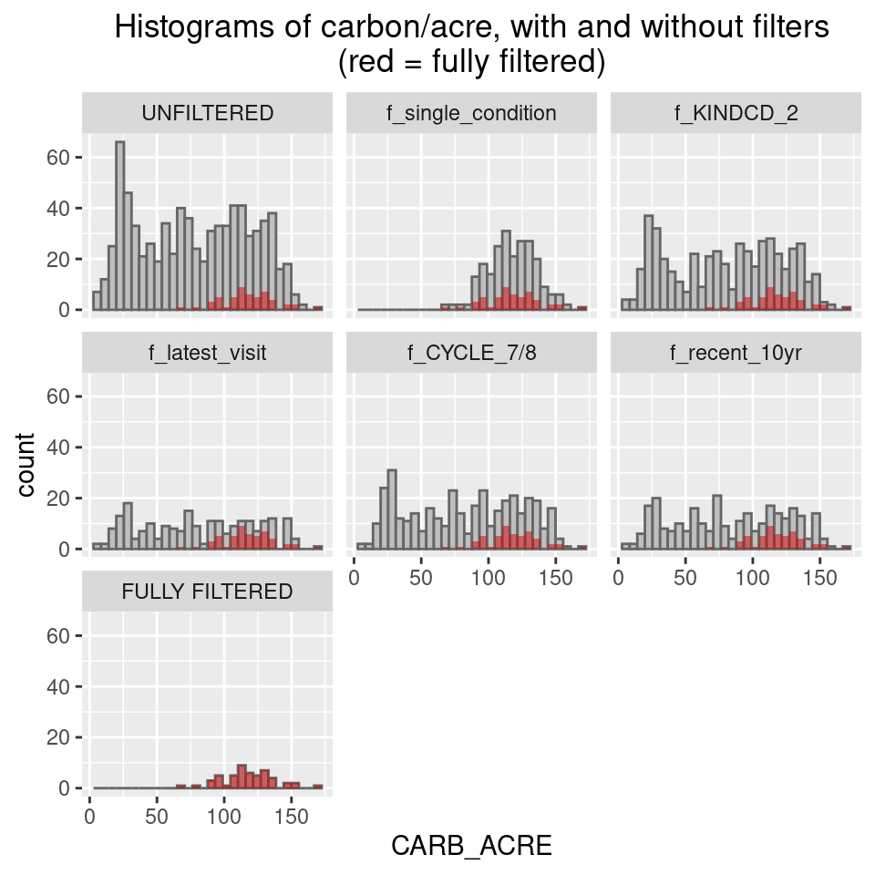

library(rFIA)
library(dplyr)
library(ggplot2)
library(tidyr)
library(maps)MODULE 01 - Filtering FIA plots for VM0045 donor pool
Disclaimer: This material was prepared on my own personal time and is offered in my personal capacity only. It does not represent the views of, nor is it endorsed by, any current or past employer.
—INTRODUCTION—
In this first module, I demonstrate a partial approach to filtering FIA plots to serve as an IFM project baseline. I say partial, because the full filtering procedure also requires information about forest monitoring plots within the IFM treatment area (i.e., the sample unit). But in this module, no sample units are designated. Thus, this module approximates how someone might explore where to locate an IFM project.
I demonstrate this using data from Rhode Island. I chose Rhode Island for ease of data processing and memory management, since it’s the smallest US state. But, as we’ll see towards the end of this module, such a geographic restriction is not in compliance with the VM0045 (version 1.2) methodology. Nonetheless, this geographic choice still illustrates some key aspects of the methodology.
—R PIPELINE—
Load packages
This pipeline makes use of the following packages:
rFIAfor downloading data from FIADB (the public USFS FIA database) and performing carbon calculationsdplyr&tidyrfor data manipulation and managementggplot2for plottingmapsfor drawing state boundaries
Download data from FIADB
By default, the function rFIA::getFIA() downloads FIA data directly into RAM. This is a practical approach when working with small datasets, such as the Rhode Island dataset. The approach changes when dealing with larger datasets, which will be addressed in a future module. (see here for more info about dealing with big data in rFIA).
We also download the reference tables, which will come into play later. getFIA() will not download state data and reference tables in the same call, so they are done separately and stored in separate objects.
# long-running data download / wrangling code here
# get raw data from FIADB (RI - 9.3 MB)
FIADB <- getFIA("RI")
# get reference tables from FIADB (4.3 MB)
REF <- getFIA("REF")Calculate carbon per acre at the plot level
This step is one of the main reasons for using rFIA in the first place: carbon() calculates the carbon/acre (in metric tonnes/ac) for each plot visit. In other words, each row corresponds to a separate visit, such that a plot sampled at multiple times will have multiple rows of data.
cc <- carbon(db = FIADB, # object in which raw FIADB data are stored
byPlot = TRUE, # perform calculations at the per-plot level
byPool = FALSE) # do NOT split carbon calcs by IPCC forest carbon pool (default is TRUE)
str(cc)tibble [483 × 5] (S3: tbl_df/tbl/data.frame)
$ PLT_CN : num [1:483] 5.59e+13 5.59e+13 5.59e+13 5.59e+13 5.59e+13 ...
$ YEAR : int [1:483] 2003 2003 2003 2003 2003 2003 2003 2003 2003 2003 ...
$ pltID : chr [1:483] "1_44_3_84" "1_44_3_190" "1_44_3_144" "1_44_3_58" ...
$ CARB_ACRE : num [1:483] 130.2 115.6 52.5 111.6 75.3 ...
$ PROP_FOREST: num [1:483] 1 1 0.5 1 1 0.75 0.75 0.25 1 1 ...We can see from the output above that cc is a tibble with 5 columns. Of note is the column PLT_CN, which contains a unique identifier for each plot visit. For any given FIA plot, each sampling visit is assigned a unique PLT_CN, such that the same plot can and usually does have multiple PLT_CN’s associated with it.
PLT_CN is an important key that allows us to join data across many FIADB tables. In some tables, such as PLOT, this identifier is called CN instead of PLT_CN, but it’s the same thing.
Join filtering variables/metadata to carbon table
The variables used for filtering are found across three different FIADB tables: PLOTGEOM, COND, and PLOT. As far as I know, the carbon() function does not have a way to include these variables in its output. Therefore, it’s necessary to join these variables in separately. Thankfully, the FIADB object already contains the three necessary tables.
NOTE: all variables listed in the subsections below are directly used for filtering or joining, unless otherwise specified.
PLOTGEOM variables
From PLOTGEOM (i.e., plot geometry table), we get ECOSUBCD, the ecological subsection code, which we then use to derive ecological section. See Cleland et al., 2007 for more details on these codes.
# metadata from PLOTGEOM table
pg_meta <- FIADB$PLOTGEOM %>%
select(PLT_CN = CN, # join key
ECOSUBCD) %>% # ecological subsection (to derive section and province)
mutate(eco_section = sub("[a-z]$", "", ECOSUBCD)) %>%
tibble()COND variables
COND (i.e., condition table) contains four variables of interest:
STDORGCD: stand origin code, which indicates whether the method of stand regeneration is natural or artificial.FORTYPCD: forest type code, which is assigns a category based on dominant woody vegetation (e.g., “Sugar maple / beech / yellow birch”).OWNGRPCD: owner group code, which assigns one of four land ownership types: Forest Service; Other Federal; State/local government; or Private. This variable is not directly used for filtering, but is rather used to derive a more general, binary land ownership class–public or private–as defined in VM0045, v1.2 (p. 58).CONDPROP_UNADJ: unadjusted proportion of plot in given condition. Values range (0, 1].
# metadata from COND table
cond_meta <- FIADB$COND %>%
select(PLT_CN, # join key
STDORGCD, # stand origin category
FORTYPCD, # forest type
OWNGRPCD, # owner group (to derive public/private attribute)
CONDPROP_UNADJ) %>% # unadjusted condition proportion of plot
# derive ownership_class, as defined in VM0045 v1.2
mutate(ownership_class = case_when(OWNGRPCD == 40 ~ "Private",
OWNGRPCD < 40 ~ "Public")) %>%
tibble()PLOT variables
PLOT (i.e., the plot table) has several variables of interest:
CYCLE: inventory cycle number, assigned to a set of plots measured over a particular time.MEASYEAR/MEASMON/MEASDAY: the year, month, and day that plot measurements were taken. Used to derive measurement date, which is used for filtering.KINDCD: code indicating whether a plot visit was a remeasurement, new installation, replacement, etc.LAT/LON: latitude and longitude. While these are not used for filtering in this module, they are used for mapping.
# metadata from PLOT table
plot_meta <- FIADB$PLOT %>%
select(PLT_CN = CN, # join key
CYCLE, MEASYEAR, MEASMON, MEASDAY, # time variables
LAT, LON, # geo variables (for mapping)
KINDCD) %>% # sample kind code
# create new column for measurement date
mutate(meas_date = as.Date(paste(MEASYEAR, MEASMON, MEASDAY, sep="-"),
format = "%Y-%m-%d")) %>%
tibble()Join variables to carbon table
After having gathered the filtering variables, we join them to the table containing carbon/acre values. Inner joins are used throughout, because all PLT_CN’s carried forward need to have a full set of filtering variables.
# join all the metadata to the main table
# NOTE: using inner joins, because all metadata required for filtering/matching
cc_m <- pg_meta %>%
inner_join(cond_meta, by = "PLT_CN") %>%
inner_join(plot_meta, by = "PLT_CN") %>%
inner_join(cc, by = "PLT_CN") Donor pool selection: filtering FIA plot visits
Section A1.5.1 of the VM0045 documentation describes a set of criteria that an FIA plot must meet to be eligible for the donor pool. The donor pool is the set of all FIA plots to be considered for inclusion in the composite baseline for a given sample unit. The composite baseline is a subset of plots (i.e., constituent baseline plots) from the donor pool that represent the baseline scenario. In other words, the composite baseline is used as a control against which carbon changes in the sample units are compared. And the sample unit is a representative forest inventory plot within an IFM treatment area that will be used for monitoring changes in carbon over time.
Each of the donor pool eligibility criteria correspond to a filter that can be performed using variables joined earlier. I like to think of the filters in two groups (though such a distinction is not explicitly made in the VM0045 documentation):
absolute criteria: conditions that a plot must meet, irrespective of the sample unit’s attributes.
relative criteria: conditions that a plot must have in common with the sample unit.
Because I have not designated a sample unit for this module, only the absolute filters can be applied. But after filtering by the absolute criteria, we’ll take a look at how the plot count breaks down across the relative filtering groups.
Determine most recently completed re-measurement cycle
One of the selection criteria involves knowing the most recently completed re-measurement cycle. I have not found a systematic way to look this up in FIADB. So instead, let’s take a look at the contingency table of CYCLE.
# manually inspect to determine latest COMPLETED cycle (for one of filters below)
table(FIADB$PLOT$CYCLE)
3 4 5 6 7 8
187 178 257 259 271 216 As we can see above, the visit counts for cycles 5, 6, and 7 are all at least 257, while the count for cycle 8 is only 216 (substantially less). And there is no data for cycle 9. This suggests that cycle 8 has not yet completed.
So, we will assume that the most recently completed cycle is cycle 7.
Apply absolute filters
We are now ready to apply the absolute filters to our dataset. These filters retain only:
the most recent visit for each plot, using
PLT_CNandPREV_PLT_CN(an extra variable from the PLOT table)visits for plots with multiple measurement cycles, using
KINDCDplots visited in the most recently completed measurement cycle, using
CYCLEvisits completed within the last 10 years (as of 1-Nov-2025, our hypothetical sample unit establishment date), using
meas_date. NOTE: this criterion is given in VM0045 v1.2, Section 6 rather than in Section A1.5.1.visits for which only single conditions were recorded, using
CONDPROP_UNADJ
cc_mf <- cc_m %>%
# retain only the most recent visit for each plot
filter(!PLT_CN %in% unique(FIADB$PLOT$PREV_PLT_CN)) %>%
# retain only visits for which plot has at least 2 measurement cycles
filter(KINDCD == 2) %>%
#retain only visits measured in most recently completed re-measurement cycle
filter(CYCLE >= 7) %>%
# retain only visits completed within past 10 years
filter(as.Date ("2025-11-01") - meas_date <= 10 * 365.25) %>%
# retain only plot visits for which entire plot is single condition
filter(CONDPROP_UNADJ == 1)Validation
Let’s do some accounting to ensure valid data.
First, we check for missing values. Any plot visits missing values from any of the filtering variables would be a reason to remove that plot from the donor pool. As seen below, this dataset has no missing/NA values.
# check for NA values
sapply(cc_mf, FUN = function(x){sum(is.na(x))}) PLT_CN ECOSUBCD eco_section STDORGCD FORTYPCD
0 0 0 0 0
OWNGRPCD CONDPROP_UNADJ ownership_class CYCLE MEASYEAR
0 0 0 0 0
MEASMON MEASDAY LAT LON KINDCD
0 0 0 0 0
meas_date YEAR pltID CARB_ACRE PROP_FOREST
0 0 0 0 0 Next, we compare the number of rows (i.e., unique plot visits) before and after filtering. As seen below, filtering reduced the number of plot visits in our dataset from 785 to 52. NOTE: these values may differ if this script is run at a later date.
# compare number of rows (i.e., unique plot visits)
nrow(cc_m) # after joining metadata[1] 785nrow(cc_mf) # after filtering[1] 52Let’s also compare the number of unique plots before and after filtering. As seen below, there are 163 before and 52 after. Given that we have 52 unique visits and 52 unique plots means that each plot is represented only once. This is what we would expect from selecting only the most recent visit from each plot, as was done with one of the filters.
# compare number of unique plots
length(unique(cc_m$pltID)) # after joining metadata[1] 163length(unique(cc_mf$pltID)) # after filtering[1] 52A simple map
Let’s see how the filtered set of plots looks on a simple map.
# confirm general layout of plots
plot(cc_mf$LON, cc_mf$LAT,
asp = 1 / cos(mean(cc_mf$LAT, na.rm=TRUE) * pi/180), # keeps aspect ratio consistent
pch = 3, ylab = 'latitude, degrees', xlab = 'longitude, degrees')
# add state boundaries
map("state", add = TRUE)
The map has a few quirks. First, there is a plot near the bottom at -71.4 degrees longitude that appears to fall in water. But a comparison with a more detailed map of Rhode Island shows that there is actually an island in the middle of that body of water. The state boundary rendered by map() does not capture this island.
Second, three plots appear to fall just outside the western border of Rhode Island. These are likely the result of coordinate “fuzzing”, a standard practice that obscures true FIA plot coordinates for privacy and plot integrity. In other words, the coordinates we’re working with are slightly offset from the true plot coordinates.
Other than that, the map looks fairly straightforward. There is an area in the middle of the state devoid of fully forested plots, which is likely because that part of the state is relatively developed compared to the rest of the state.
Exploratory data analysis (EDA) of relative filtering groups
As mentioned earlier, since this module does not designate a sample unit, we cannot apply the relative filters to the donor pool. But it is still instructive to explore the grouping of plots across the relative filtering variables STDORGCD, FORTYPCD, ownership_class, and eco_section.
First, let’s look at the unique values of each of these variables in our filtered dataset.
# unique values of each relative filtering variable
cc_mf %>% select(STDORGCD, FORTYPCD, ownership_class, eco_section) %>%
sapply(FUN = unique)$STDORGCD
[1] 0
$FORTYPCD
[1] 519 510 503 103 608 505 809 962 520 401 502 515 801
$ownership_class
[1] "Public" "Private"
$eco_section
[1] "221A"We see that two of these four variables only have one unique value each, meaning that all plots are:
naturally regenerated (
STDORGCD= 0)found within the “Lower New England Section” of the “Eastern Broadlead Forest Province” (i.e., ecological section 221A)
It’s not surprisingly that such a small land area would be so uniform in these respects.
However, we see 13 distinct forest type codes (FORTYPCD) and two distinct ownership_class values. Let’s join the corresponding forest type names from one of the reference tables and construct a contingency table of the 4 variables to see the plot counts within each grouping.
cc_mf %>%
left_join(REF$REF_FOREST_TYPE, by = c("FORTYPCD" = "VALUE")) %>%
select(forest_type = MEANING, ownership_class, STDORGCD, eco_section) %>%
table() , , STDORGCD = 0, eco_section = 221A
ownership_class
forest_type Private Public
Chestnut oak 1 0
Chestnut oak / black oak / scarlet oak 2 0
Eastern white pine 4 5
Eastern white pine / northern red oak / white ash 2 1
Mixed upland hardwoods 1 0
Northern red oak 2 3
Other hardwoods 1 0
Red maple / oak 3 1
Red maple / upland 1 1
Scarlet oak 1 4
Sugar maple / beech / yellow birch 1 1
Sweetbay / swamp tupelo / red maple 3 0
White oak / red oak / hickory 10 4The contingency table confirms that all plots share the same stand origin code (0) and ecological section code (221A). Further, we see that there are between 0 and 10 plots per forest_type x ownership_class grouping in our dataset.
Remember, plots in the donor pool must have the same stand origin, ecological section, forest type, and ownership class as the corresponding sample unit. So, depending on where we want to locate our hypothetical IFM project in Rhode Island, we would have at most 10 FIA plots to choose from in the donor pool.
However, per VM0045 section A1.5.1, a donor pool must contain at least 50 potential donor plots. So, the donor pools of Rhode Island FIA plots are all too small for our purposes.
Section A.1.5.1b lists three steps that can be taken, one at a time, until the donor pool reaches at least 50 plots. But wait! We need to back up a step and consider an important detail of the donor pool selection rules: “plots must not be excluded on the basis of any criteria other than [the relative and absoulte filters outlined earlier].” There are no filters that allow for excluding plots on the basis of state boundaries.
As seen in the map below, ecological section 221A (comprising all subsections beginning with “221A”) extends well beyond Rhode Island.

So, to be in compliance with VM0045, we should expand our earlier call to rFIA::carbon() to include FIA plots from all states that intersect with ecological section 221A: Rhode Island, Connecticut, Massachusetts, New Hampshire, Maine, New York, New Jersey, and Pennsylvania. And then we would filter from there.
As a side note, VM0045 (v1.2) section A1.5.1.a.ix does have an optional provision to further restrict the donor pool by geographic distance from the sample unit, provided this extra restriction can be justified. So, this is one allowable option for restricting the number of states.
All that said, we’re not quite done with this dataset yet…
Exploring effects of filters on distribution of carbon/acre data
Let’s explore how filtering affects the distribution of carbon data by inspecting some histograms. Specifically, let’s see how each filter affects the carbon/acre data on it’s own.
# create a separate table for each filter applied individually
base <- cc_m
f_single <- cc_m %>% filter(CONDPROP_UNADJ == 1)
f_kind2 <- cc_m %>% filter(KINDCD == 2)
f_latest <- cc_m %>% filter(!PLT_CN %in% unique(FIADB$PLOT$PREV_PLT_CN))
f_cycle7 <- cc_m %>% filter(CYCLE >= 7)
f_recent <- cc_m %>% filter(as.Date("2025-11-01") - meas_date <= 10*365.25)
final <- cc_mf
view <- bind_rows(
base %>% mutate(step = "UNFILTERED"),
f_single %>% mutate(step = "f_single_condition"),
f_kind2 %>% mutate(step = "f_KINDCD_2"),
f_latest %>% mutate(step = "f_latest_visit"),
f_cycle7 %>% mutate(step = "f_CYCLE_7/8"),
f_recent %>% mutate(step = "f_recent_10yr"),
final %>% mutate(step = "FULLY FILTERED")
) %>%
mutate(step = factor(step, levels = c(
"UNFILTERED",
"f_single_condition",
"f_KINDCD_2",
"f_latest_visit",
"f_CYCLE_7/8",
"f_recent_10yr",
"FULLY FILTERED"
)))
## overlay data: filtered distribution, copied into each step
steps <- levels(view$step)
overlay <- bind_rows(lapply(steps, function(s)
final %>% mutate(step = factor(s, levels = steps))
))
ggplot() +
# background: each filter's own distribution
geom_histogram(
data = view,
aes(x = CARB_ACRE),
bins = 30,
fill = "grey75",
color = "grey40"
) +
# overlay: fully filtered distribution, same in every panel
geom_histogram(
data = overlay,
aes(x = CARB_ACRE),
bins = 30,
fill = "red3",
alpha = 0.5
) +
facet_wrap(~ step, ncol = 3, scales = "fixed") +
labs(x = "CARB_ACRE", y = "count",
title = "Histograms of carbon/acre, with and without filters\n(red = fully filtered)") +
theme(plot.title = element_text(hjust = 0.5))
The first and last histogram show the unfiltered and fully filtered data, respectively. The remaining histograms show the results of each filter applied on its own (rather than in sequence). The completely filtered histogram is overlayed across all histograms in red to more clearly show the effect of each filter relative to the final result.
Three of the filters–latest visit, cycle 7/8, and within last 10 years–all seem to have similar distributions. This makes sense, since they are all selecting for recency. That said, the cycle 7/8 filter seems to be the least selective of the three.
In comparison, the KINDCD = 2 filter is even less restrictive. By selecting for re-measurement visits, it’s including visits further back in time than any of the three recency filters above.
The single condition filter behaves differently than the others. It preferentially selects plots with relatively high carbon/acre values. This makes sense. The earlier call to rFIA::carbon() selected only plots with at least one forested condition, via the default value to the (unspecified) landType argument. So, filtering the resulting dataset for single-condition plots guarantees that all of the remaining plots will be fully forested. And fully forested plots will generally have more carbon/acre.
NOTE: regardless of any redundnacy among filters, they all need to be applied to stay in compliance with VM0045.
—CONCLUSION—
In this module, we explored some aspects of the VM0045 donor pool selection methodology, using Rhode Island as an example. This process involved:
downloading raw FIA data with
rFIA::getFIA()calculating carbon/acre on a per-plot basis using
rFIA::carbon()joining in filtering variables from various FIADB tables
filtering the dataset based on these variables
We saw that, after removing plots that did’t meet the absolute criteria, we were left with donor pools that were too small in any of the groupings by relative criteria. Furthermore, we discovered that excluding plots based on state boundaries alone is not in compliance with VM0045.
We also saw the effects of each filter on the distribution of carbon/acre data.
In a future module, we’ll designate a sample unit to see how the full donor pool selection process works and move on to the next step in the process: matching FIA plots to the sample unit to construct a composite baseline.